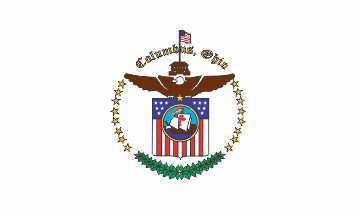

The flag of Columbus is the official municipal flag of Columbus, Ohio. Its current design is a yellow, white, red vertical triband with the city seal on a blue field. Officially, the flag was adopted in 1929, although it is unknown if the flag was ever flown when it was first adopted.
The city's first flag was adopted in 1912. The design consisted of the seal on a blue field. The second and current flag replaced this flag in 1929, but an unofficial flag similar to the one officially defined in legislation rose to higher prominence. Instead of a yellow, white, and red tricolor, it had a red, white, and blue tricolor. It remains unknown how this flag came to be, but after this anomaly was discovered, the city began flying the correct flag.
Columbus originated as numerous Native American settlements on the banks of the Scioto River. Franklinton, now a city neighborhood, was the first white settlement, laid out in 1797. The city was founded in 1812, at the confluence of the Scioto and Olentangy rivers, and laid out to become the state capital. The city was named for Italian explorer Christopher Columbus.[12] The city assumed the function of state capital in 1816 and county seat in 1824. Amid steady years of growth and industrialization, the city has experienced numerous floods and recessions. Beginning in the 1950s, Columbus began to experience significant growth; it became the largest city in Ohio in land and population by the early 1990s. The 1990s and 2000s saw redevelopment in numerous city neighborhoods, including downtown.
The city has a diverse economy based on education, government, insurance, banking, defense, aviation, food, clothes, logistics, steel, energy, medical research, health care, hospitality, retail, and technology. The metropolitan area is home to the Battelle Memorial Institute, the world's largest private research and development foundation; Chemical Abstracts Service, the world's largest clearinghouse of chemical information; and Ohio State University, one of the largest universities in the United States. As of 2021, the Greater Columbus area is home to the headquarters of six corporations in the U.S. Fortune 500: Cardinal Health, American Electric Power, L Brands, Nationwide, Alliance Data, and Huntington Bancshares.